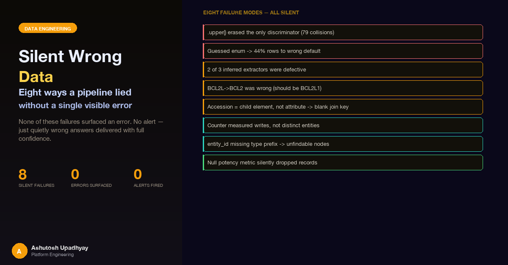

None of these failures surfaced an error. No alert, no visible exception, no bad log line — just quietly wrong answers delivered with full confidence.
The most instructive data bug we hit in the past year did not throw an exception. It did not log an error. It returned a dictionary, fully populated, carrying 297,497 synonyms and 473,381 cross-references. The response time was normal. The downstream join ran to completion. We only noticed because a researcher asked why a query about a human cancer cell line was returning results that matched a mouse hybridoma.
A single line of XML parsing code was reading an element as an attribute. The field that served as the join key was blank for all 50,000 rows in the dataset. When the filter ran, it matched everything, and the first row in the table happened to be a mouse hybridoma. The data looked healthily populated. Every call succeeded. The answers were consistently, silently wrong.
That was one incident. There were seven others like it — different mechanism, same pattern: the pipeline completed without complaint, the data it produced was wrong, and the wrongness propagated into answers that the system delivered with full confidence. None of them involved schema drift, null propagation, or stale sources (those are covered in our earlier post on data infrastructure quality for AI readiness). These are a different class of failure: structural corruption that the type system, the exception handler, and the monitoring dashboard all agreed was fine.
Here is a catalogue of all eight, with what happened, why nothing errored, the fix, and the verification that would have caught each one.
Our ingestion pipeline resolves biological specimen identifiers by name — a common step when joining data from sources that use slightly different spellings or capitalisations. After an initial pass produced 79 unresolved entries, we added a normalisation step: name.strip().upper() before every lookup. The 79 failures persisted.
Characterising them revealed the problem: all 79 were pure case-variant collisions. INS-1 and Ins-1 are different organisms — rat insulinoma versus a human line. Li-7 and LI-7 are different species — human hepatocellular carcinoma versus a mouse hybridoma. rMC-1 and RMC-1, K562-R and K562-r — same pattern. Every one of the 79 entries resolves uniquely on an exact-case match. Case was the discriminator, and the normalisation discarded it before the lookup ran.
Why nothing errored: name.strip().upper() does not throw. The normalised value found a match — just the wrong one. Nothing in the pipeline checked whether the match was unambiguous.
# Before — normalise up front, silently collapse case variants
normalised = name.strip().upper()
match = registry.get(normalised) # "INS-1" and "Ins-1" fold to the same key; wrong match is silent
# After — exact-case primary index + separate case-folded index for fuzzy lookup
# Build phase (once, at registry load):
case_index = {} # folded key -> list of ALL entries that fold to it
for key, entry in registry.items():
case_index.setdefault(key.strip().upper(), []).append(entry)
# Lookup phase — most-specific first:
match = registry.get(name) or registry.get(name.strip())
if not match:
candidates = case_index.get(name.strip().upper(), [])
if len(candidates) == 1:
match = candidates[0] # "hela" -> "HELA" -> [HeLa] -> resolved
# len > 1: ambiguous collision — surface all candidates, do not pick one silentlyFix: exact-case primary lookup first; only falls through to a separately-built case-folded index when no exact match exists. The case-folded index maps each folded key to all entries that fold to it — so hela finds HeLa (one candidate) while INS-1 and Ins-1 each resolve by exact match before reaching the folded index. On collision (multiple candidates), all are surfaced rather than one being silently chosen. Verification that would have caught it: a test fixture with at least one known case-variant pair (INS-1 / Ins-1) asserting they resolve to different entries, run before the normalisation change shipped.
The broader lesson: before applying any normalisation, ask what information the transform discards. In biological identifiers, case, hyphens, whitespace, and Greek letters all carry meaning. IFN-γ vs IFNG, Ins-1 vs INS-1, CDK1 vs CDK2 — the thing you stripped was the only thing that distinguished them.
When integrating clinical development stage data from a public drug-target database, the pipeline needed to map stage labels to confidence weights. We wrote the mapping from intuition:
# Guessed values — three of six keys do not exist in the live API
STAGE_WEIGHTS = {
"PHASE_4": 0.95,
"APPROVED": 0.95, # actual key is APPROVAL
"PHASE_3": 0.85,
"PHASE_2": 0.70,
"PHASE_1": 0.60,
"PRECLINICAL": 0.50,
}The live API, sampled across 305 rows, uses APPROVAL (not APPROVED), PREAPPROVAL, PHASE_1_2, PHASE_2_3, and UNKNOWN. Three of our six keys did not exist. The key APPROVAL covers 44% of all rows. Every drug in that bucket fell through to the default — which we set to 0.5, below even PHASE_1's 0.6.
The result: querying the ranking of drugs targeting HER2 by confidence returned pertuzumab (an approved therapy) at 0.5, below an obscure phase-1 compound at 0.6. Because the confidence score carried a source annotation, the inversion was authoritatively attributed to the data source. The data source was right. The mapping was wrong.
Why nothing errored: a missing dictionary key in Python returns the default. The code path completed normally. There was no log line, no sentinel value, no warning that 44% of rows hit the fallback.
Fix: sample the live API before writing the mapping — a GROUP BY or a short loop collecting set(values) across ten representative entities is enough to surface all real keys. Log any unrecognised value explicitly and score it conservatively so that a new enum variant surfaces immediately rather than silently landing mid-range. Verification: a single assertion — assert weight("APPROVAL") > weight("PHASE_3") > weight("PHASE_1") > weight("UNKNOWN") — would have caught this before the code shipped.
We built four data extractors for a knowledge graph. One was written against a captured payload — a real API response logged to disk and used as the ground truth for the consumer. The other three were written by reading the producer's source code and inferring the return shape. Two of those three had defects that code inspection had already "confirmed."
The first defective extractor read columns named fdr and pvalue. The real dataset uses adj_p_val and p_value. The column names were not wrong — they were simply never there. Every edge in that extractor landed on the fallback confidence of 0.6 regardless of statistical significance. A gene with adjusted p-value of 1×10⁻¹² and one at 0.49 were recorded as equally confident. Because the knowledge graph's edge merge keeps the maximum confidence seen, 0.6 became a permanent floor — unreachable by any downstream update.
The second defective extractor had the right column names but wrong semantics. The source is multi-species, and the extractor keyed nodes on bare gene symbol. A record from a non-human species would silently overwrite a human node's Ensembl ID, because the property merge was an unconditional set rather than a conditional update.
Why nothing errored: reading record.get("fdr") on a record that has no fdr key returns None, not an exception. The confidence value defaulted silently. The extractor ran to completion and reported success.
Fix: capture a real payload before writing anything that consumes it. Call the tool, log the response to disk, and write the consumer against that. If capturing is impossible, the consumer is not ready to ship. Verification: an integration test that calls the actual tool, captures one response, and asserts that each expected field is present and non-null — run on every change to either the producer or the consumer.
The trap with code inspection is that it shows you the keys on the path you happened to read. It does not tell you which of nine possible return shapes your extractor will receive, what error returns look like, or whether the identifiers in the payload join to anything in your graph.
A 14-row alias table mapping informal gene names to canonical HGNC symbols was written from memory. It felt too small to audit carefully — 14 rows, straightforward mappings. The table contained one entry: BCL2L → BCL2. This is wrong. BCL2L is an HGNC alias for BCL2L1 (Bcl-xL), a different gene from BCL2. Bcl-xL and Bcl-2 are related anti-apoptotic proteins but they have different tissue expression, different inhibitor profiles (navitoclax vs venetoclax), and different toxicological implications.
A query about Bcl-xL activity would have been answered with Bcl-2 evidence, and the response would have annotated the canonical symbol as BCL2 to justify it. Two other rows in the same table were ambiguous rather than wrong: the alias NEU also matches NEU1, and PD1 is a legacy symbol for SNCA. These were not caught because nobody queried the registry.
Why nothing errored: the mapping was a valid Python dictionary with a valid string value. The lookup succeeded. The canonical symbol BCL2 exists in every downstream database. Every query completed. The answers were about the wrong gene.
# Before — written from memory, unvalidated
GENE_ALIASES = {
"BCL2L": "BCL2", # WRONG — BCL2L is an alias for BCL2L1, not BCL2
"NEU": "ERBB2", # AMBIGUOUS — NEU also resolves to NEU1
"PD1": "PDCD1", # AMBIGUOUS — PD1 is also a legacy symbol for SNCA
}
# After — each row validated against the HGNC registry
# GET https://rest.genenames.org/search/BCL2L (Accept: application/json)
# → alias_symbol for BCL2L1, not BCL2
GENE_ALIASES = {
"BCL2L": "BCL2L1", # confirmed via HGNC
...
}Fix: treat hand-curated identifier tables as data and validate every row against the authoritative registry API before shipping. Query HGNC, MONDO, ChEBI, or UniProt for each entry, print a per-row verdict (OK / WRONG / AMBIGUOUS / NOMATCH), and gate the commit on zero WRONG rows. Verification: a table-driven test that asserts each mapping and asserts that already-canonical symbols are returned unchanged.
This is the one from the opening paragraphs. A public biological specimen database provides an XML export containing roughly 50,000 entries. Each entry has an accession identifier that serves as the primary key for all downstream joins. Our parser read that identifier with:
# Wrong — reads an XML attribute that does not exist at this element
accession = elem.get("accession", "") # "" for every rowIn the actual XML schema, the accession is a child element, not an attribute on the root cell-line element:
<!-- Actual XML structure (simplified) -->
<cell-line category="Hybridoma" ...> <!-- category IS an attribute -->
<accession-list>
<accession type="primary">CVCL_XXXX</accession>
</accession-list>
</cell-line># Correct — reads the child element, mirrors how adjacent fields were parsed
acc = elem.find("accession-list/accession[@type='primary']")
accession = acc.text.strip() if acc is not None and acc.text else ""Because elem.get("accession", "") on an element with no such attribute returns an empty string rather than raising an error, every one of 50,000 rows got a blank accession. The assembly function that filters rows by accession value then matched everything — because every row matched the empty-string key. The first row in the table was a mouse hybridoma entry. Every query returned that row, with the whole-table counts of 297,497 synonyms and 473,381 cross-references attached as though they belonged to it.
Why nothing errored: elem.get() is the correct function to read XML attributes; it silently returns the default when the attribute is absent. The sibling fields that are attributes — category, sex, species — populated normally, so the response appeared healthy.
Fix: add an explicit blank-key guard after parsing — skip any record whose primary identifier is empty and log a counter. Verification that would have caught it: parse a known entry (e.g., HeLa, accession CVCL_0030) and assert the returned accession is non-empty and matches the expected value. This test costs ten lines and would have fired immediately.
The general principle: a blank join key is the most dangerous kind of bad data. A filter on a blank key matches everything rather than nothing. You get confidently wrong answers, not errors — and the data looks fully populated because it is.
A knowledge graph service exposed a statistics endpoint that reported node and edge counts by entity type. The gene count on a live table showed 2,015. The actual number of distinct gene nodes on that table was 435. The total node count showed 3,137; the actual was 784 — a 4× inflation.
The counter incremented on every upsert, not on every creation. A single research query re-upserts the same gene node from multiple sources as it processes results. That gene gets counted each time. The more the system was used, the more wrong the number got — the exact opposite of how people intuitively expect a metric to behave.
There was a second problem layered underneath. The code that read the counter had a subtle serialisation bug: it was passing typed DynamoDB values to the wrong client method, which double-serialised them on a boto3 resource Table and caused a ValidationException. That exception was caught by a broad except block that logged at DEBUG level and returned a fallback value computed as int(table.item_count * 0.6). The write-event counter had accumulated 3,137 against 784 actual nodes (2,015 against 435 gene nodes), but the read path never reached it — the serialisation failure caused every get_stats() call to fall back to int(table.item_count * 0.6). The number reaching users and the agent's tool calls was a fabricated 60/40 split of raw item count; the already-inflated write-event counter was not even being read.
Why nothing errored: the upsert function did not distinguish new items from updates. The except block hid the serialisation error. The fallback returned a plausible integer. The statistics endpoint returned 200 with a well-formed JSON response.
# Before — increments on every write regardless of whether the item is new
def upsert_node(entity_type, entity_id, props):
table.put_item(Item={"pk": entity_id, **props})
counters.increment(entity_type) # fires on update AND creation
# After — increment only when the item did not previously exist
def upsert_node(entity_type, entity_id, props):
response = table.update_item(
Key={"pk": entity_id},
UpdateExpression="SET #d = :d",
ExpressionAttributeNames={"#d": "data"},
ExpressionAttributeValues={":d": props},
ReturnValues="UPDATED_OLD"
)
if not response.get("Attributes"): # no previous item → new creation
counters.increment(entity_type)Fix: gate the increment on ReturnValues="UPDATED_OLD" returning empty Attributes — that is DynamoDB's signal that the item was newly created, not updated. Separately: a fallback that invents a number must never ship. Log the error at ERROR level and return an explicit unavailable signal. A zero that means UNKNOWN is indistinguishable from a zero that means empty. Verification: reconcile the counter against a scan of actual items before trusting it; a ratio far from 1.0 tells you what the counter actually measures.
A knowledge graph uses a DynamoDB composite GSI where the sort key index is constructed as {entity_type}:{search_term}. This means every search query is structured as a begins_with filter over that composite pattern. A node whose entity ID does not start with its entity type is written successfully, passes the provenance gate, appears in scans — and can never be returned by any search.
While writing new extractors, we used what felt like natural sub-kind prefixes as the entity ID prefix. For entities of type evidence_item, we wrote IDs like study:record_001 and result:record_002, because "study" and "result" felt like more descriptive identifiers. The node was stored. No error was raised. But every subsequent search for evidence items ran:
# Search function — always prefixes the query with entity_type
Key("entity_type").eq("evidence_item") &
Key("entity_id_lc").begins_with("evidence_item:")
# A node stored as pk = "study:record_001" with entity_type = "evidence_item"
# will NEVER be returned — the begins_with condition fails silently# Wrong — sub-kind used as prefix
entity_id = f"study:{record_id}" # entity_type is "evidence_item"
entity_id = f"result:{record_id}" # entity_type is "evidence_item"
# Correct — entity_type is always the prefix, sub-kind follows the colon
entity_id = f"evidence_item:study_{record_id}"
entity_id = f"evidence_item:result_{record_id}"Why nothing errored: put_item does not validate the content of a string field against any convention. The node was written. Reads via direct key lookup (where the full partition key is known) would have succeeded. Only searches — the primary access pattern — would have silently returned empty results.
Fix: assert the type-prefix invariant in every extractor before it writes a node: assert entity_id.lower().startswith(entity_type.lower() + ":"). This fires at write time, not at search time — the earliest possible moment. Verification: a unit test that writes a node with a valid ID, searches for it, and asserts the returned count is non-zero. Run it for each new extractor before the extractor is integrated.
The permanence matters here. The graph had no delete route and TTL was disabled. A node written with the wrong ID prefix was not just temporarily invisible — it was unreachable for the lifetime of the data store. Fixing the extractor code would not repair the stored nodes.
A dose-response data service returned an empty result set for a compound that was confirmed present in the underlying data. The underlying database had one record for that compound. The service said it found a record but could not retrieve it. The researcher reported a data gap.
The service filtered results before returning them:
# Before — silently excludes records where curve fit did not converge
valid_records = [r for r in results if r.get("potency_metric") is not None]
return valid_recordsRecords where the curve-fit algorithm did not converge carry a null for the potency metric field. Those records are real data — a null potency metric means "curve did not converge," not "compound was not tested." The filter was removing them without logging or signalling the exclusion. The caller received an empty list, saw that the total match count was 1, and could not reconcile the two facts.
Why nothing errored: list comprehension filtering does not raise on null values. The empty list is a valid return. The match count came from a separate database query and was not cross-checked against the returned list length.
# After — include all records; surface the exclusion explicitly
all_records = results
converged = [r for r in results if r.get("potency_metric") is not None]
if len(converged) < len(all_records):
logger.info(
"%d of %d records have null potency_metric (curve did not converge); returning all",
len(all_records) - len(converged),
len(all_records)
)
# Return all records; let the caller decide how to handle non-converged entries
return all_recordsFix: return all records and expose the convergence flag, letting the caller decide how to handle unconverged entries. Add an explicit log line when the returned list is shorter than the matched count. Verification: a test fixture that includes at least one record with a null potency metric, asserting it appears in the return value and that the log contains the exclusion count.
| Failure | Root mechanism | Why it was silent | Minimum verification |
|---|---|---|---|
| Case normalisation | Discriminating information stripped before lookup | Wrong match is still a match | Known case-variant pair in the test fixture |
| Guessed enum | Missing key falls through to default | Default is a valid score, not an error sentinel | Assert ordering: APPROVAL > PHASE_3 > PHASE_1 > UNKNOWN |
| Inferred payload shape | Consumer written against imagined schema | .get() returns None silently; default used |
Integration test against a captured real payload |
| Curated alias table | Wrong canonical symbol hand-written from memory | Wrong symbol exists in every downstream database | Registry API validation, per-row verdict printed |
| Blank join key | Attribute vs child element in XML parsing | Empty string matches everything in the filter | Parse known entry, assert non-empty accession |
| Write-event counter | Increment on upsert, not on creation | Integer return value; plausible fallback hid the error | Reconcile counter against scan before trusting it |
| Type-prefix violation | Entity ID prefix mismatches entity type | Write succeeds; only search is broken | Write node, search for it, assert result count > 0 |
| Null potency filter | List comprehension silently excludes null records | Empty list is valid; match count came from separate query | Fixture with null-potency record; assert it appears in response |
Before a data integration ships, run through these eight checks:
GROUP BY across a representative sample. Never write enum keys from intuition.The common thread across all eight is that the failure mode was designed in, not accidental. Case normalisation is a useful operation in many contexts — it just should not be unconditional. Enum defaults are useful — they just must not shadow a known category. A counter is useful — it just must measure what its name says it measures. In each case the error was not in the operation itself but in the assumption that the operation was safe to apply without first verifying what it would throw away.
The verification step in every case is small — a single test, a one-time API query, an assertion at write time. The cost of skipping it is paid later, quietly, by users who get wrong answers that the system delivered with full confidence.